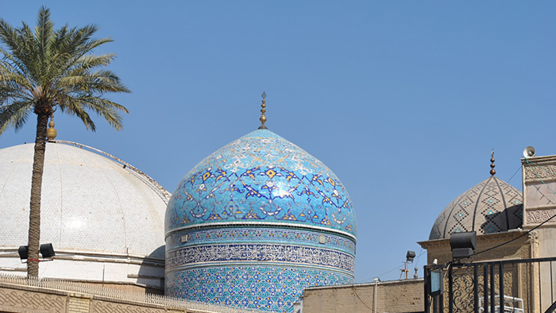

পবিত্র রবীউছ ছানী শরীফ
৩ রবীউছ ছানী শরীফ
পবিত্র ঈদে মীলাদে সাইয়্যিদাতুনা হযরত আন নূরুছ ছানিয়াহ আলাইহাস সালাম।
৫ রবীউছ ছানী শরীফ
পবিত্র ঈদে মীলাদে সিবতু রসূলিল্লাহ, সাইয়্যিদুনা হযরত ইমাম ইবনে যুন নূরাইন আলাইহিস সালাম।
১১ রবীউছ ছানী শরীফ
হযরত বড়পীর ছাহেব রহমতুল্লাহি আলাইহি উনার পবিত্র বিছালী শান মুবারক প্রকাশ দিবস, যা পবিত্র ফাতিহায়ে ইয়াযদাহম শরীফ নামে মশহূর।
১২ রবীউছ ছানী শরীফ
পবিত্র সাইয়্যিদু সাইয়্যিদিল আ’দাদ ১২ই শরীফ। এ দিন কোটি কোটি কণ্ঠে পবিত্র মীলাদ শরীফ অনুষ্ঠিত হয়।
১৮ রবীউছ ছানী শরীফ
সাইয়্যিদাতুনা হযরত আন নূরুছ ছানিয়াহ আলাইহাস সালাম উনার সাথে সাইয়্যিদুনা হযরত যুন নূরাইন আলাইহিস সালাম উনার পবিত্র নিসবতে আযীম শরীফ দিবস।
১৯ রবীউছ ছানী শরীফ
পবিত্র ঈদে মীলাদে উম্মুল মু’মিনীন সাইয়্যিদাতুনা হযরত আস সাবি’য়াহ আলাইহাস সালাম।
পবিত্র ঈদে বিলাদতে সাইয়্যিদাতুনা হযরত নিবরাসাতুল উমাম আলাইহাস সালাম।
২৩ রবীউছ ছানী শরীফ
নূরে মুজাসসাম, হাবীবুল্লাহ হুযূর পাক ছল্লাল্লাহু আলাইহি ওয়া সাল্লাম উনার সাথে উম্মুল মু’মিনীন সাইয়্যিদাতুনা হযরত আত তাসি‘য়াহ আলাইহাস সালাম উনার পবিত্র নিসবতে ‘আযীম শরীফ দিবস।